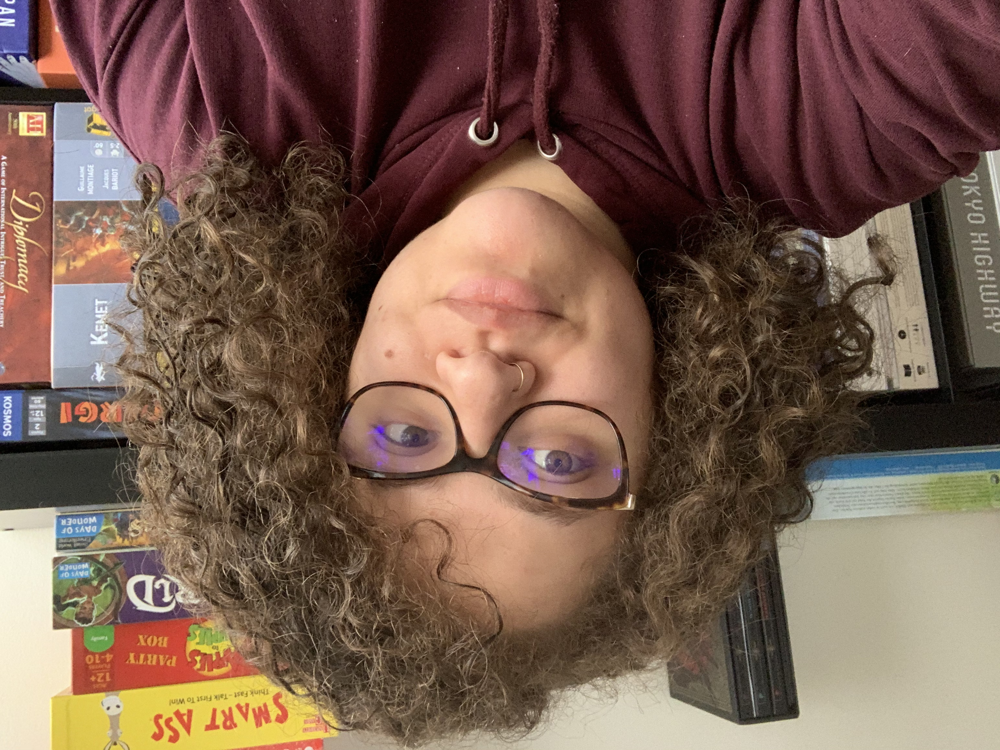

About Me

Welcome
My name is Rebecca Alves
You stumbled upon my first webpage
I was born in a small Brazilian town that you cannot locate on a map. I migrated with my family to america when I was very young. I spent most of my childhood and teenage yers in Framingham, MA. I absolutely love framingham, and I am very thankful for my expirience in the diverse enviroment. My favorite passtime activities are concerts, board games, video games, an playing guitar. I also venture on the occasional hike here and there. My board game collection contains over 40+ games. If you need an unconventional board game recommendation, I am your gal! I lost count of the amount of concerts I attended. The concerts I attend range from metal to alternative rock. You can convince me to see any band or performer live.
Resume
Contact
Email: rebeccaspindola@hotmail.com
Phone Number: (508)439-1638)
Technical Skills
Programming Laguages: HTML, Python, C, C++, CSS
Productivity Software: Microsoft Word, Excel, Power-point, Keynote, Pages, Numbers
Operating Systems: MacOS, Unix, iOS, Windows
Technical Certifications: Apple Certified Mac Technician (ACMT), Apple Certified iOS Technician (ACiT)
Employment History
Bookstone
Sales Associate (10/2012 - 11/2012)
Lead Associate/2nd Assistant Store Manager (11/2012 - 06/2015)
Assistant Store Manager (04/2016 - 04/2017)
Precision Fitness Equipment
Sales Coordinator (04/2015 - 06/2016)
Apple
Specialist (12/2016 – 04/2017)
Technical Specialist (04/2017 – 12/2017)
Technical Expert (12/2017 – 11/2018)
Genius (11/2018 – Present)
Education
Massachussets Bay Community College
Graduation Date: 12/2018
Degree: (AA) Liberal Arts
University of Massachussets Lowell
Currently Attending
Bachelor of Science in Computer Science
Concentration: Biocheminformatics